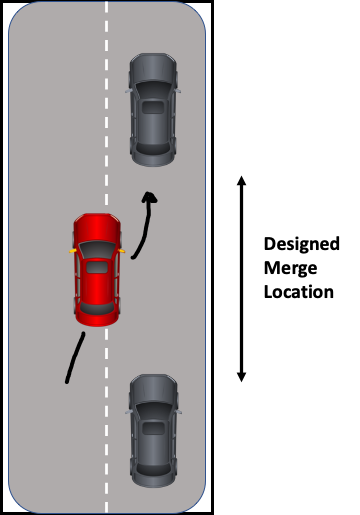
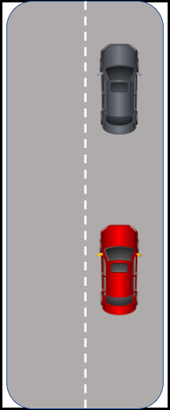
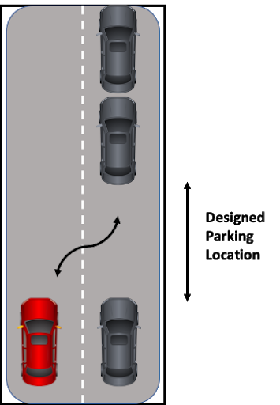
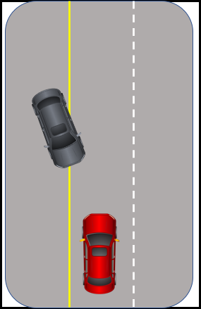
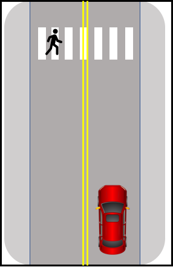

Share us
Challenge Goals
Deliverable #1 - Demonstrate familiarity
with scripting of LGSVL Simulator and Baidu Apollo by creating basic
test scenarios.
Deliverable #2 - Generate a more diverse set
of AV simulation test scenarios and scripts using SVL Simulator and
Baidu Apollo.
Deliverables
Deliverable #1 - Develop specified simulation test scenarios and scripts for a specified route.
The major objective of this task is to
prepare each team to get familiarized with LGSVL simulator and
Baidu Apollo autonomous driving
platform. Each team must select maps and vehicles provided by the LGSVL
simulator,
and generate six Python scenario scripts
for selected six test sample scenarios listed in the
following six categories. A simulation
execution report (for scenario scripts) must be generated
using the LGSVL simulator and submitted
to the specified group folder in the given submission link.
Submission Requirements for Deliverable #1:
- Scenarios and associated scripts
- Simulation execution report (Note
that “Test Results” are not available in LGSVL Simulator 2020.06 which
was initially recommended for
deliverable #1, so this report is not required for deliverable #1. Teams
may
instead choose to include any
interesting console output generated by the scenario script during the
execution
of each scenario. If using SVL
Simulator 2021.1, a report may be generated by enabling the Create Test Report
option, printing the resulting Test Results screen as a PDF and including that report.)
- Scenario demo videos (e.g. screen
capture video; submit link to YouTube, Google Drive, etc.)
- Selected scenario trip/route and
map information (e.g. which maps were used; include descriptions and/or
sketches of routes for ego and NPC trajectories)
- A (written) simulation test
report, which documents the generated test scenario scripting methods,
and problem findings.
The six sample test scenarios will be selected from the following six categories.
1. Perform lane change/low-speed merge
Note: You may wish to start with (easier) scenario 2 (vehicle following) before attempting this one. Because you can only give Apollo a destination to drive to, you cannot specifically command it to change lanes or merge at a given time. You’ll need to think of a way to encourage the ego vehicle to change lanes.
2. Perform vehicle following

3. Move out of travel lane/park
Note: While some versions of Apollo support autonomous parking, this requires the use of special parking-enabled maps and those are not available at this time. The goal of this scenario, then, will be to set up the scenario with parked NPCs and specify the source and destination for the parked ego vehicle as if it were going to park there. This is similar to a unit test that is written before the implementation is complete. The scenario will not be penalized for unimplemented ego behavior.
4. Detect and respond to school buses
Note: Apollo does not currently recognize or respond appropriately to school buses at this time. The goal of this scenario, then, will be to set up the scenario with a stopped school bus and specify the source and destination for the ego vehicle. This is similar to a unit test that is written before the implementation is complete. The scenario will not be penalized for unimplemented ego behavior.

5. Detect and respond to encroaching oncoming vehicles

6. Detect and respond to pedestrians

Reference: “A Framework for Automated Driving System Testable Cases and Scenarios” The United States National Highway Traffic Safety Administration.
https://www.nhtsa.gov/sites/nhtsa.dot.gov/files/documents/13882-automateddrivingsystems_092618_v1a_tag.pdf
Deliverable #2
Similar to AV road testing, AV
simulation testing is a very complex task due to the following
challenges:
- Lack of cost-effective automation tool for test scenario and script generation
- Lack of well-defined adequate validation standards and criteria
The challenge task in the second phase
is to ask each team to do their best to select the map(s) and driving
route(s) to use effective approaches to
generate diverse AV simulation test scenarios and scripts.
There are two major objectives: a)
achieve good scenario diversity, and b) detect AV problems in the
simulation environment.
During this phase, each team is going to
create and submit diverse simulation test scenarios and scripts
using effective approaches based on the
criteria listed in the “Evaluation Criteria” section. Teams can
create scenarios based on the reports
published by National Highway Traffic Safety Administration.
Submission requirements for Deliverable #2:
- Scenarios and associated scripts
- Simulation execution report
for all each scenario scripts script (With SVL Simulator 2021.1, a
report
is generated by enabling the Create Test Report option, printing the resulting Test Results screen as a PDF
and including that report.)
- Scenario demo videos(e.g.
screen capture video; submit link to YouTube, Google Drive, etc.)
- Selected scenario trip/route
and map information (e.g. which maps were used; include descriptions
and/or sketches of routes for ego and NPC trajectories)
- A (written) simulation test
report, which documents the generated test scenarios, classes, scripting
methods, simulation test coverage, and problem findings.
[1] Pre-Crash Scenario Typology for Crash Avoidance Research
https://www.nhtsa.gov/sites/nhtsa.dot.gov/files/pre-crash_scenario_typology-final_pdf_version_5-2-07.pdf
[2] A Framework for Automated Driving System Testable Cases and Scenarios
https://www.nhtsa.gov/sites/nhtsa.dot.gov/files/documents/13882-automateddrivingsystems_092618_v1a_tag.pdf
Register for challenge
Dates
Important Dates
Registration deadline :
March 15 2021
Training, preparation starts:
February 2021
First phase challenge submission:
April 30 2021
Notification of selected teams :
May 15 2021
Second phase challenge submission:
July 15 2021
Paper submission:
July 15 2021
AI Test Conference presentations
August 23 2021
Announcement of winners:
August 2021
Contacts
Contacts:
Jerry Gao
Jerry.Gao@sjsu.edu
Wencen Wu
wencen.wu@sjsu.edu
Oum-El-Kheir Aktouf
oum-el-kheir.aktouf@lcis.grenoble-inp.fr
About Website:
Everette Li
everetteli12@gmail.com
Zizhen Huang
zizhen.huang@sjsu.edu